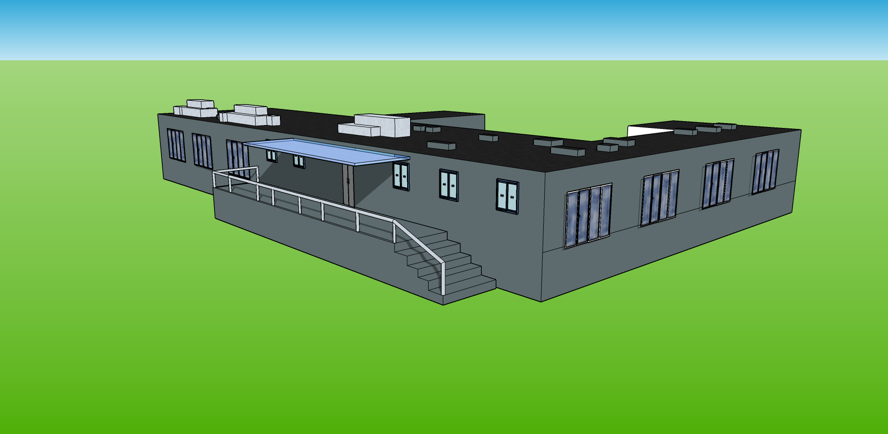
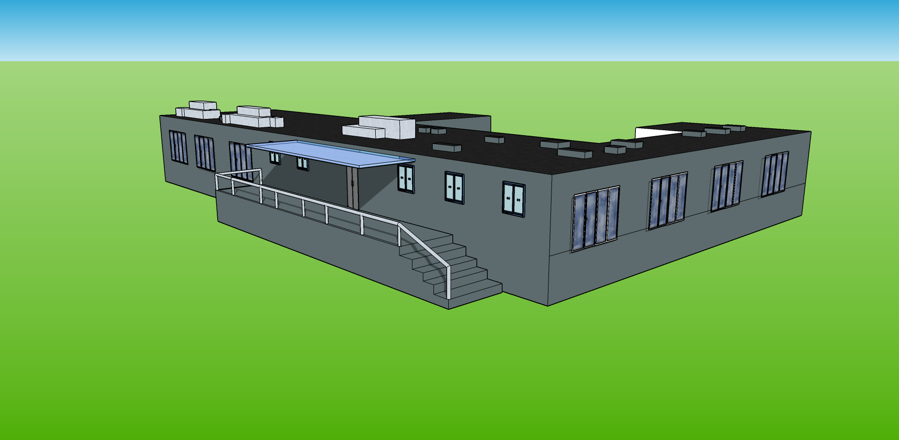
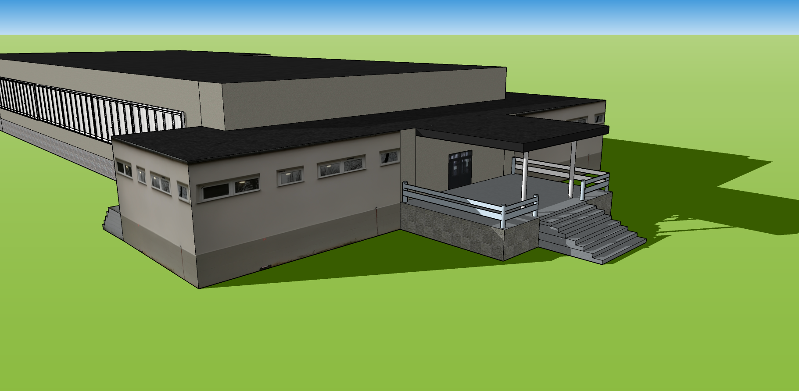
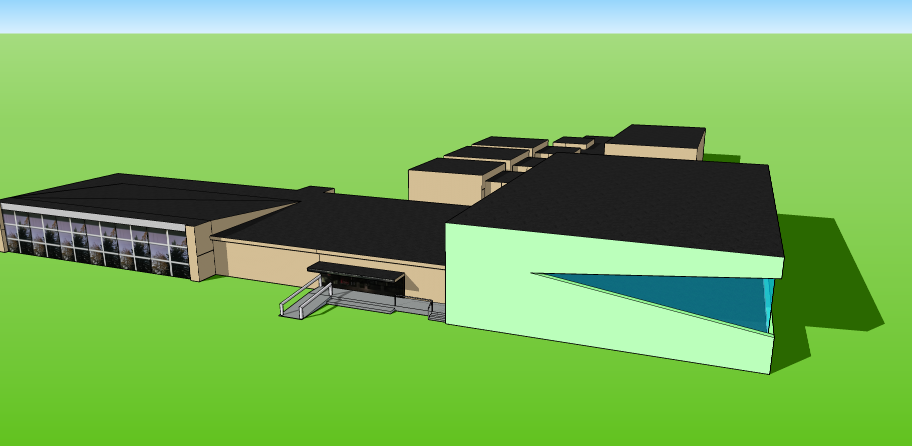

Sketchup
SketchUp jest to program komputerowy CAD, służący do modelowania trójwymiarowego. Jest on darmowy dlatego wykorzystałem go do opracowania budynków występujących na obszarze opracowania. Dodatkowym atutem SketchUp’a jest baza danych zawierająca prace udostępnione przez użytkowników. Baza danych zawiera produkty, gotowe komponenty, które można wykorzystać w pracy np. okna, samochody itd. Program pozwala również na dodawania tekstur do obiektów, aby oddać jak najdo-kładniej rzeczywistość, mogą to być własnoręcznie wykonane zdjęcia tak jak w moim przypadku lub gotowe pliki lub sam kolor.
Opracowane Budynki

Szczegółowość budynków na poziomie LOD 2-3, które opracowano pokazują jak dużo pracy odręcznej trzeba włożyć aby osiągnąć ten wynik. Wiązało się to z wieloma trudnościami takimi jak: brak informacji w tabeli atrybutów, niezaktualizowana baza danych przez co w wizualizacji mogą wystąpić budynki lub obiekty, które nie istnieją lub brakować może tych nowopowstałych. Tego typu praca wymaga od wykonawcy dużego nakładu pracy, szacując jeden budynek w oprogramowaniu SketchUp wykonuje się około godziny. Ilość czasu można zminimalizować korzystając z przedstawionej alternatywnej metody przy użyciu skaningu laserowego. Dane tego typu nie są jednak dostępne na większości obszarów, wiąże się to również z większymi kosztami niż wykorzystana metoda, w której wykorzystano dane ogólnodostępne z państwowych zasobów. Skaning laserowy pozwala przyśpieszyć główne procesy, jednak nie zwalnia całkowicie z pracy odręcznej, której do tej pory nie można niczym zastąpić. Im większy poziom szczegółowości tym większy nakład włożonej w to pracy. Rośnie więc zapotrzebowanie na automatyzacje czynności związanych z modelowaniem miast 3D oraz ich wykorzystaniem.
 


